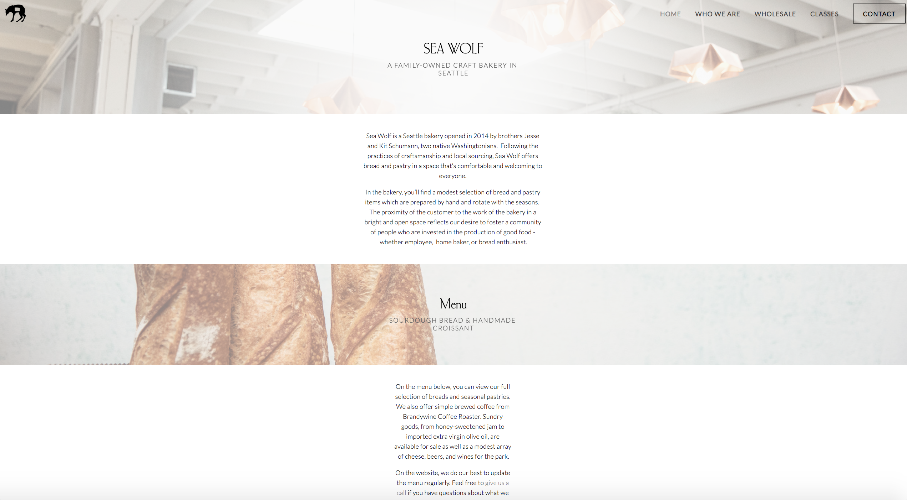
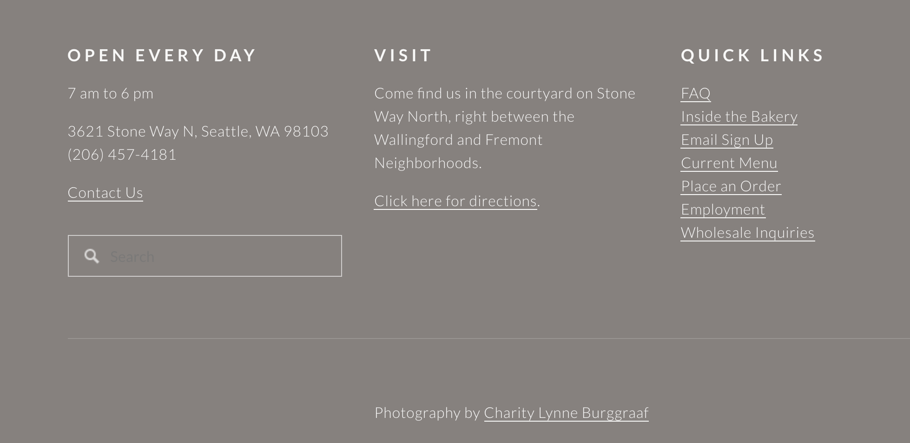
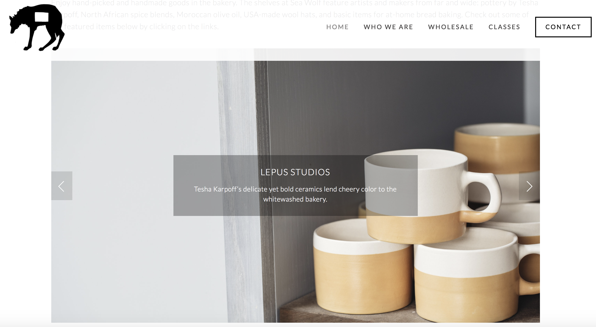

For my third post I want to write about the importance of user testing and provide some examples from my own data. I think it is reasonable to expect that websites for businesses will include a description of their product, hours of operation and location, and these features should be prominent without the need for too much scrolling or searching. I feel restaurants have the additional requirement of including mouthwatering pictures of their product as soon as possible on their main page.
User testing allows us to test our intuition about the major problems with a website by having other eyes review it. It is helpful to include a wide demographic of age, computer ability, and gender in your testing pool, and I guarantee you will find additional user issues in the process.
The website I reviewed is the main site for Sea Wolf Bakers, a Seattle Bakery so popular that there is a line that snakes out the door on Saturday morning. Sea Wolf uses Squarespace to host and build their website; Squarespace is similar to Wordpress in that it can be used by people with little knowledge of web technologies. They also provide templates and drag/drop menus, but are not open source. In full disclosure, I have been in Sea Wolf's Saturday line repeatedly, as I love their cinnamon rolls. Some examples of the website are shown below.
Sea Wolf's Home Page, top
Sea Wolf, footer
Sea Wolf, carousel
My First Impressions
After spending some time on the site reviewing its visual appeal, architecture, and components, my overall impression is positive, but some items could use tweaking. My findings are summarized below.
My Impressions
- The pictures are of high quality but sometimes are faded out in the background and hard to see.
- The main page has a logo, the bakery's name, and a nav bar where a viewer would expect them to be.
- Account and login utilities are not present but not necessary.
- A search option in the top nav bar is missing and would be useful.
- Many links to the website are buried at the bottom of the page in the footer, including a search field and quick links.
- Links are not always clear.
- Sea Wolf's address and hours are buried at the bottom of the page and in the "Contact" menu item.
- Text is not always at a high enough contrast to the background image.
- My overall impression is that time has been put into the website but modern design is sometimes being chosen over function. It is also possible that Squarespace is not providing enough web development feedback to their customers.
The Test Subjects.
The three test subjects I used for this website were a twenty year old very bright female university student, a thirty-five year old male web developer, and a 79 year old retired woman. The differences in their computer ability and knowledge was taken into account, but they still all agreed on the points below. My seventy-nine year old subject had far less expectations of both her ability to navigate and expected clarity of the website; my younger test subjects were much more insistent that the website had flaws.
The Points They Agreed On.
- How to find the bakery and what hours they are open should be moved to the top of the main page.
- Text should have more contrast to the background image, should follow a hierarchy of font sizes, some is too small to read easily.
- The pictures in the carousel are links, but it is not obvious where to click. You can't click on the text.
- A search option in the top nav bar is missing and would be useful.
- The main page has important information buried at the bottom with less important information higher up that could be moved to another page.
- Pictures in the background are sometimes a distraction.
- They have a menu, but it is a pdf that opens in another tab. My older subject needed help getting back to the website.
Additional Points and Comments
- The font for the headers is wonderful and very readable.
- Following a link to the classes brings you to another website, which then shows all classes are full. There is not a waitlist available or a way to be informed about upcoming classes.
- Link to wholesale options informs they are not taking wholesale custormers at this time. There is a waitlist form but you have to scroll down to find it.
- A lovely gallery of product pictures is found through a link in the footer ("inside the bakery") but none of my test subjects found it.
- It would be easy to add a "where to find us" option in the top menu, instead that information is in "contact".
- The link to place an order dials a phone number, and this should be restricted to mobile devices.
Summary
The usability issues of this website are not huge and it would not take too much effort to fix them. When asked what the three most crucial issues are, my younger subjects were much more demanding but all three agreed the most pressing issues were: the address and hours of operation being more prominent, the text being displayed with more background contrast in places and some font sizes increased, and the quick links in the footer repositioned higher. However, this website was created with a template and without an ability and skill to modify it, these may be losing arguments. Overall this is a modern website with large full-width pictures and it translates nicely to mobile. I would start with the address/hours and text visibility issues and go from there.
Resources:
Krug, Steve. Don't Make Me Think, Revisited : a Common Sense Approach to Web Usability. [Berkeley, Calif.] :New Riders, 2014.
usability.gov. User Interface Design Basics. Web. https://www.usability.gov/what-and-why/user-interface-design.html